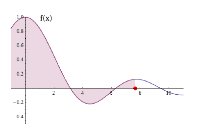

- (a)
- Is \(g\) continuous? Why or why not?
- (b)
- Is \(g\) differentiable? Why or why not?
- (c)
- Where does \(g\) achieve its absolute maximum and minimum values? Where does \(g\)
achieve any local extreme values? Assume the domain of \(g\) is \([-1,7.6]\). Since \(g\) is continuous on the closed interval \([-1,7.6]\), \(g\) attains its absolute extreme values at either critical points or endpoints. But we just saw that \(g^\prime (x) = f(x)\), and so the critical points of \(g\) are just the points where \(f(x) = 0\). Thus, the critical points of \(g\) are approximately \(3.1\) and \(6.25\).[4]
Since \(f = g^\prime \), \(g\) is increasing when \(f\) is positive and \(g\) is decreasing when \(f\) is negative. So we have that \(x=3.1\) is a local maximum while \(x=6.25\) is a local minimum of \(g\). This takes care of the local extreme values.
To find the absolute extreme values of \(g\), we need to determine what are the largest and smallest values among \(g(-1), g(3.1), g(6.25),\) and \(g(7.6)\). And do not forget the \(g(x)\) denotes the (signed) area of the region bounded by the curve and the \(x-axis\).
Clearly \(g(-1) = 0\) since a line segment does not have any area. At any time after \(x=-1\) we have a positive (net) area. Thus, our absolute minimum occurs at \(x=-1\). To find the absolute maximum of \(g\), we need to compare \(g(3.1)\) and \(g(7.6)\). We see that we have the greatest area under the curve at \(x=3.1\) because by the time we get to \(x=7.6\), the area we have subtracted off between \(x=3.1\) and \(x=6.25\) is greater than what we have added back on from \(x=6.25\) to \(x=7.6\). Therefore, our absolute maximum occurs at \(x=3.1\).
- (d)
- Where is the graph of \(g\) concave up? Concave down? [2]